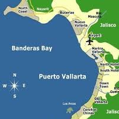

Programacion Web I PRIM25
Evaluacion Parcial 1
Profesora:M.C.Imelda Deyanira Hernandez Martinez
Alumno:Jairo Jaziel Cabral Ojeda 184453
Visita Puerto Vallarta

Universidad Politecnica De San Luis Potosi